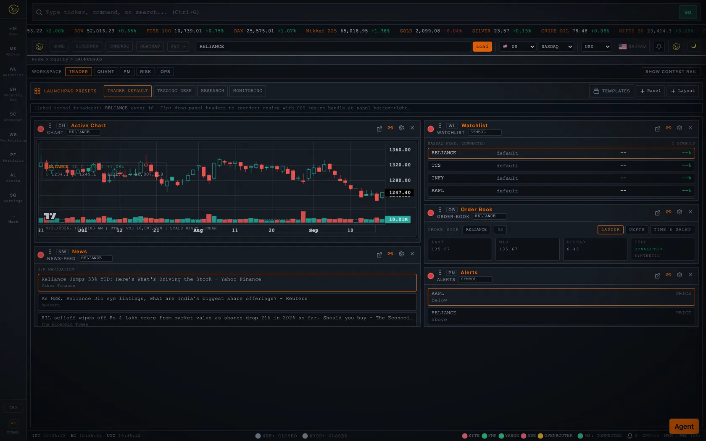
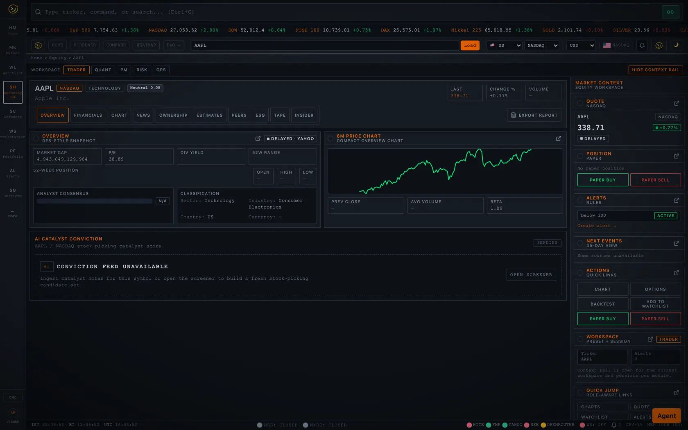
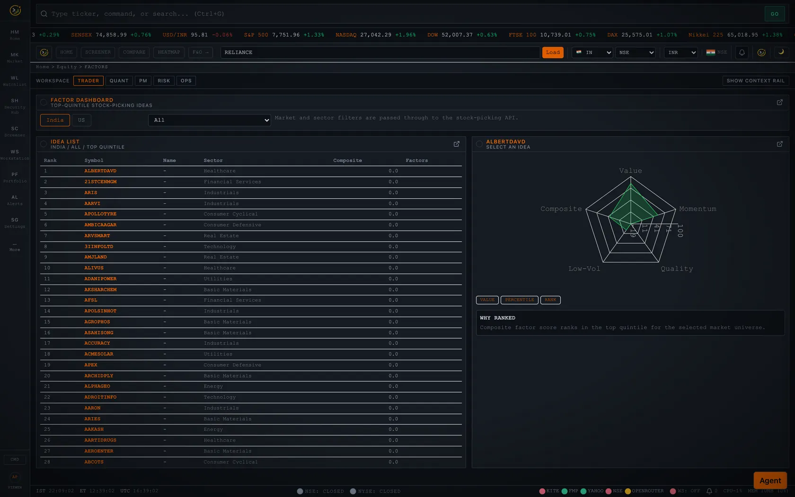
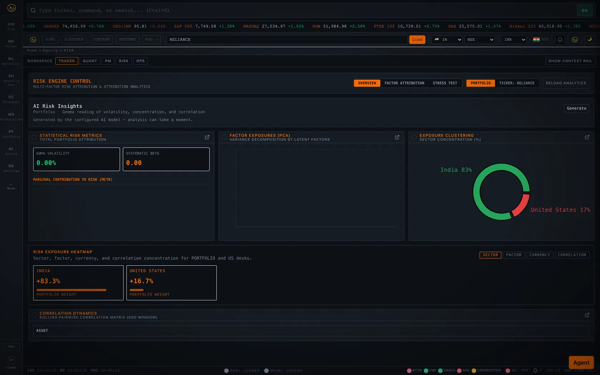
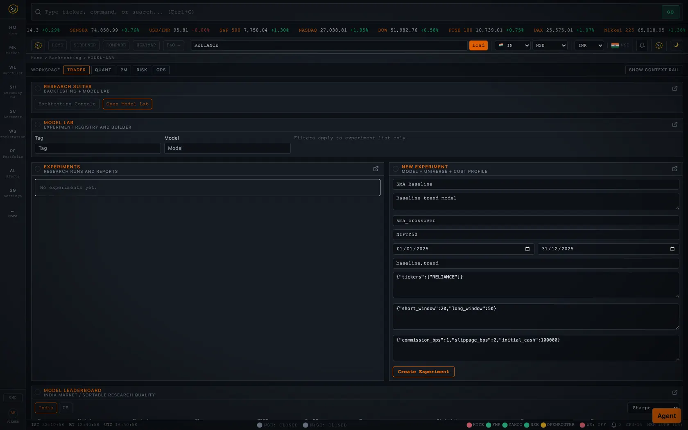
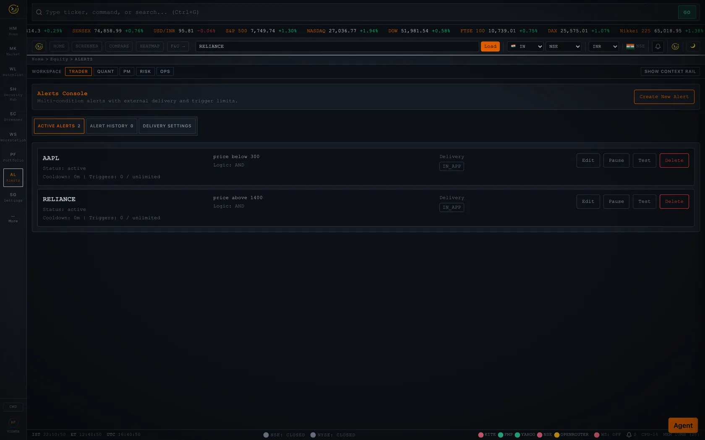
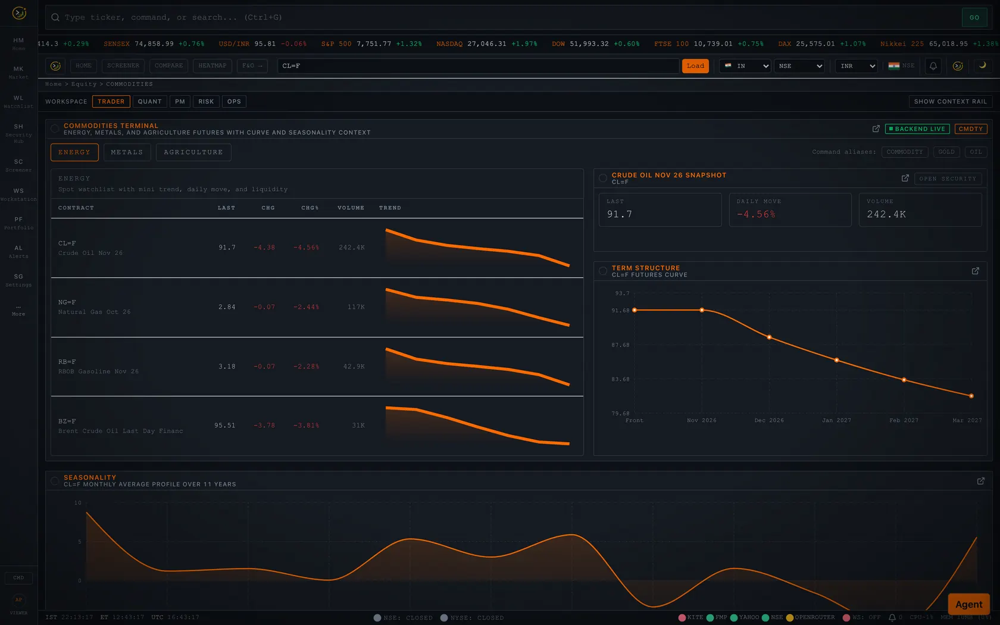
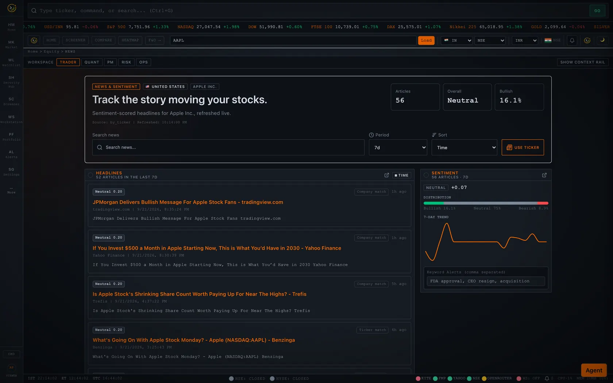

Thirteen modules, one keyboard-driven shell — the complete catalogue of what ships inside OpenTerminalUI. Open source and self-hosted.
Screens not shown on the home page — captured from the real app with seeded data.








One command on your own machine, or a Docker image from GHCR.